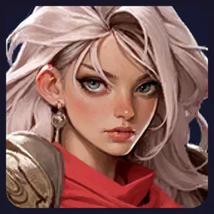
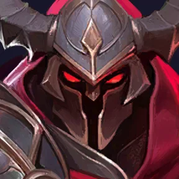
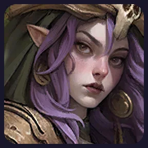

Start: 2 UR + 3 SSR
Poniższe ustawienie daje pięciu Wojowników, czyli pełną premię +20% do ataku, obrony i życia.
Oddział początkowy
5 WOJOWNIKÓW · +20% ArthurUR · obrońca
ArthurUR · obrońca MarlenaUR · atak
MarlenaUR · atak
ClaireSSR · atakPrzód ma wytrzymać ataki. Marlena i Claire z tyłu zadają obrażenia, a Celia wspiera piątkę. Jeżeli obrońcy giną szybko, nie pomoże nawet bardzo mocna Marlena.
Docelowe 5 UR
Oddział docelowy
5 WOJOWNIKÓW · +20%ArthurUR · obrońca
DaskalUR · obrońcaMarlenaUR · atak
ZoyaUR · atak HarperUR · wsparcie
HarperUR · wsparcieKogo kupić i za kogo wymienić?
Kolejność jest orientacyjna. Jeżeli Twój przedni szereg pada bardzo szybko, Daskal może być zakupem numer jeden.
Wzmacnia atak i skuteczność całego oddziału. Celię można później zachować do walk z potworami.
Poprawia wytrzymałość i pracę pierwszej linii. Gdy przedni szereg jest słaby, kup go przed Harperem.
Nie wymieniaj mocnej Claire na świeżą Zoyę tylko dlatego, że ta jest UR. Zoya powinna najpierw nadrobić gwiazdki, poziomy i umiejętności.
Kupienie trzech UR naraz i rozdawanie fragmentów wszystkim. Każda zamiana ma sens dopiero wtedy, gdy nowy bohater naprawdę poprawia wyniki.
PvP i PvE bez rozwijania 10 postaci naraz
Opcje SSR
- Bestar — atak, krwawienie i obrażenia.
- Bella / Hastar — obrona.
- Kesso / Sivir — atak.
To przykłady zamienników, gdy masz problem z konkretnym przeciwnikiem.
Opcje SSR
- Claire — obrażenia przeciw potworom.
- Celia — wzmocnienia i zasoby.
- Grenwald — mocne uderzenia.
- Stellar — wsparcie.
W pierwszej kolejności wykorzystuj tych bohaterów, których już rozwinąłeś.
Nie inwestuj równolegle w osobnych pięciu bohaterów na PvP i kolejnych pięciu na PvE. Przekładaj gotowe postacie i wyposażenie, porównuj raporty walk, dopiero później rozważ dodatkowe inwestycje.
Czy 4 z jednej frakcji + 1 z innej to błąd?
Nie zawsze. Czterech Wojowników i Cynthia z Łowców zapewniają +15% premii zamiast +20%, ale w określonej walce kontra frakcyjna może przeważyć. Wybieraj na podstawie realnych strat i zadanych obrażeń, a nie tylko liczby widocznej przy oddziale.